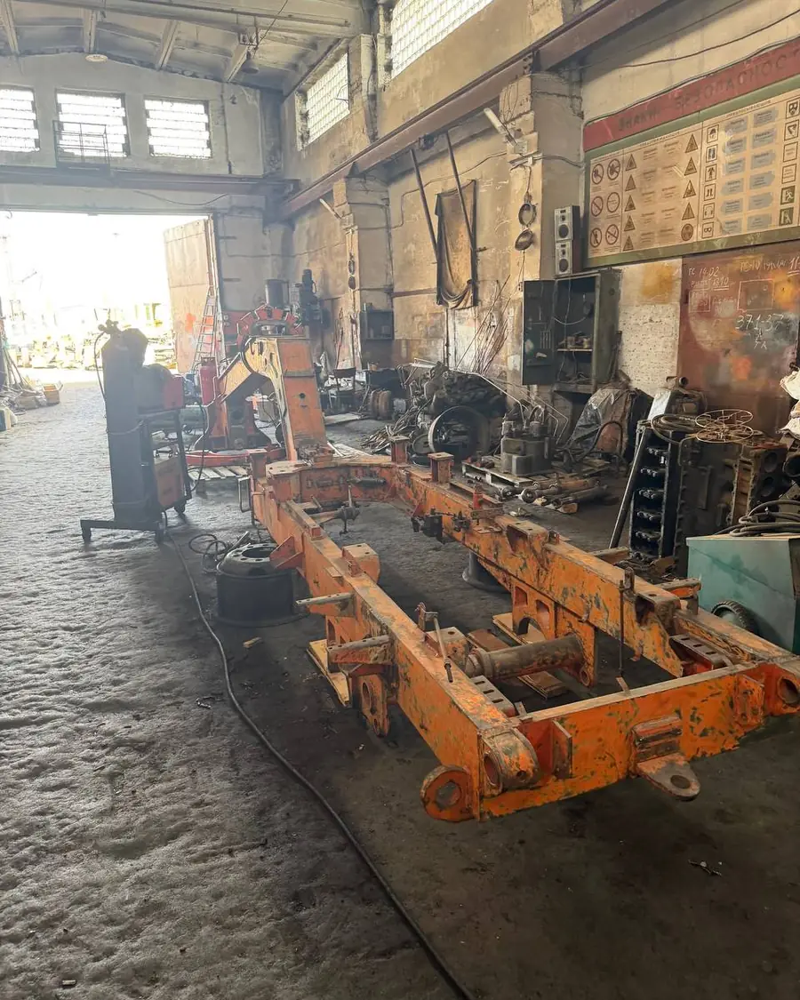
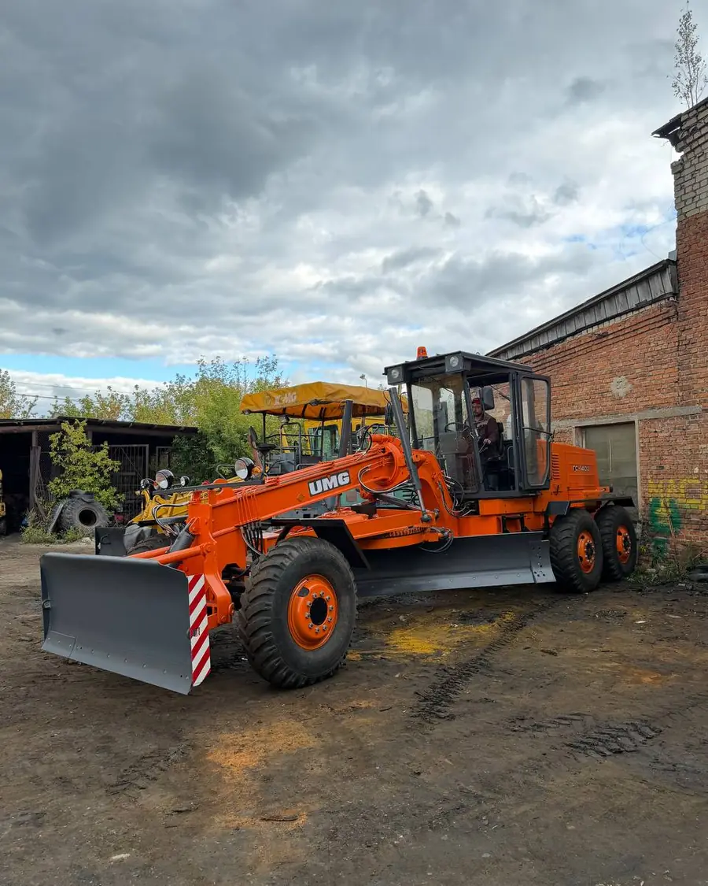
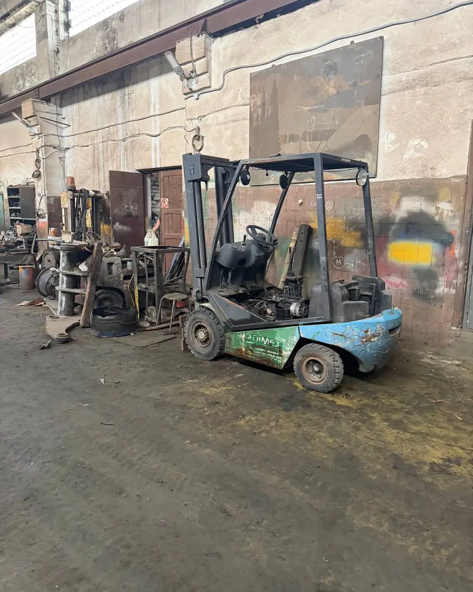
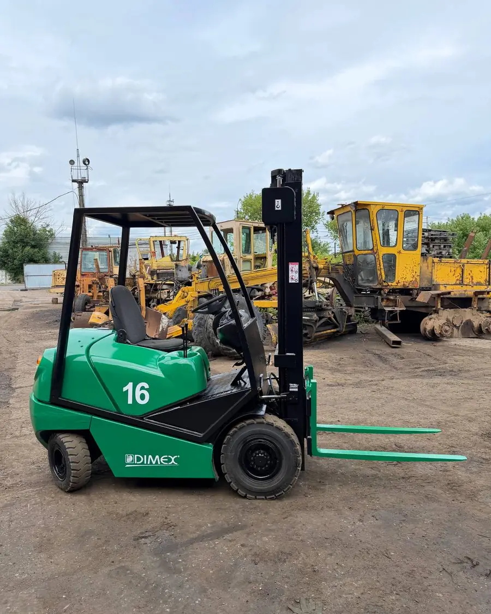
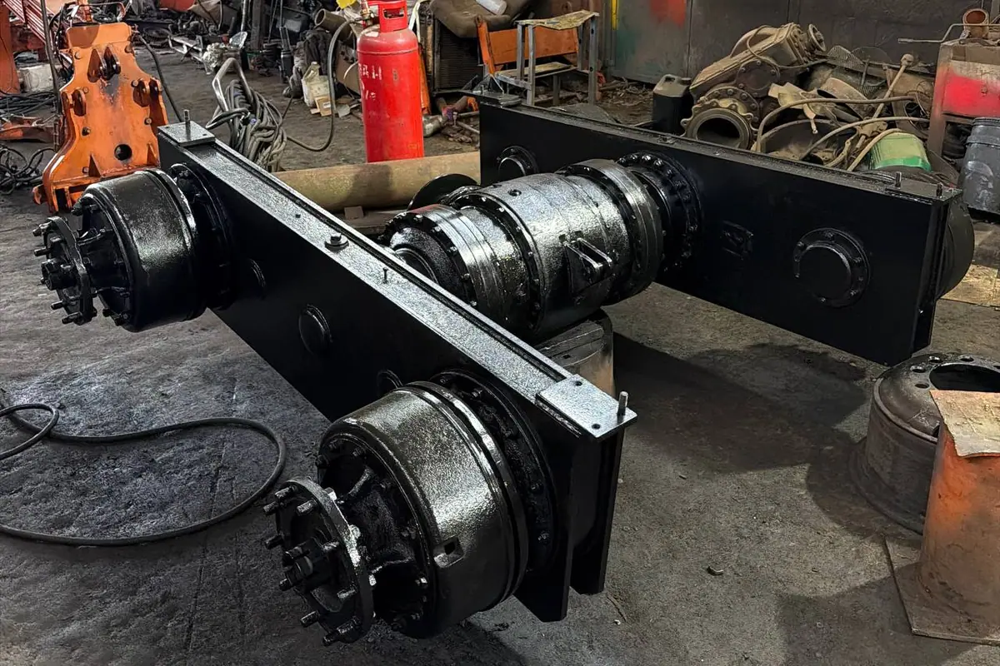

Автогрейдер ГС 14.02
Пришёл под полную переборку. Разобрали до рамы, восстановили геометрию, перебрали двигатель, КПП и гидравлику, поставили новый отвал и покрасили. Вышел на смену своим ходом.
Текущий и капитальный ремонт ГС-10.01, ГС-10.07, ГС 14.02, ГС 14.03, ГС 18.05, ГС 18.07, ГС 25.09, ДЗ-98, ДЗ-122, ДЗ-143, ДЗ-180, ДЗ-250 и других марок. 28 лет опыта, гарантия качества. Цена договорная, ремонт по всей России.
Позвонить +7 (910) 743-09-75Фотографии с нашей площадки. Слева — как машина приехала, справа — как уехала.


Пришёл под полную переборку. Разобрали до рамы, восстановили геометрию, перебрали двигатель, КПП и гидравлику, поставили новый отвал и покрасили. Вышел на смену своим ходом.


Стоял в цеху с убитой гидравликой и проеденным кузовом. Перебрали двигатель и мачту, заменили цилиндры и шланги, вылечили металл, покрасили заново.
Капремонт — это семь направлений работ. Делаем все или только то, что нужно вашей машине.
Мост разбираем целиком: дефектовка, замена подшипников и шестерён, восстановление посадочных мест наплавкой с последующей проточкой, заварка трещин в корпусе, сборка с регулировкой зацепления конических пар и окраска. Работаем по мостам Брянска и Орла, по импортным ZF и NAF.
Делаем на своём станочном участке. Поэтому срок зависит от нас, а не от чужой очереди, и мост не уезжает на полстраны и обратно.

Кирковщик (рыхлитель) на автогрейдер мы делаем на своём производстве — таких мастерских в России единицы. Изготавливаем и сразу ставим на машину, с привязкой к вашей раме и гидравлике.
Ставим и остальное навесное: бульдозерный отвал, кондиционер в кабину, автономный подогрев двигателя.
Геометрию рамы и поворотного круга восстанавливаем до заводских допусков — без этого грейдер не сделает ровную постель, сколько его ни крась.
Устанавливаем ОБГ, кирковщик (рыхлитель), кондиционер в кабину, автономный подогрев двигателя и кабины.
Компьютерная диагностика работы коробки ZF: видим ошибки и износ до разборки, не гадаем на глаз.
Новые и б/у, всех марок — со склада, со своей разборки или под заказ, с подбором по вашей машине.
Держим собственную разборку автогрейдеров и выкупаем машины под неё. Если вашу дешевле продать, чем чинить, — скажем честно и предложим цену.
Плановое ТО автогрейдеров: масла и фильтры, регулировки, протяжка, проверка узлов перед сезоном.
Работаем не только по Брянской области. Цена договорная — считаем по объёму работ после дефектовки.
Честно: назвать цену по телефону нельзя. Два одинаковых с виду ГС 14.02 могут отличаться в смете в три раза — всё решает состояние двигателя, рамы и круга.
Поэтому порядок такой: дефектовка → перечень работ и деталей с ценами → ваше решение по объёму. До согласования сметы машину не трогаем.
Что влияет на сумму сильнее всего: состояние блока цилиндров и коленвала, износ поворотного круга, трещины основной рамы и сочленения, наличие нужных запчастей.
| Работа | Ориентир |
|---|---|
| Дефектовка | 1–3 дня |
| Двигатель | от 2 недель |
| Гидроцилиндры | от 3 дней |
| Поворотный круг | от 1 недели |
| Капремонт целиком | от 1 месяца |
Сроки зависят от наличия запчастей — точные назовём после дефектовки.
Да, ремонтируем технику со всей России. Поможем организовать трал и подскажем перевозчиков, с которыми работаем.
Конечно. Чаще всего так и делают: приезжает машина с одной проблемой — её и решаем. Остальное покажем в дефектовке, а делать или нет, решаете вы.
Новые, где это оправдано, и проверенные б/у там, где новых нет или они неразумно дороги. Перечень заменённых деталей отдаём вместе с машиной.
Да, на выполненные работы и установленные узлы. Условия и срок фиксируем в документах при сдаче — они зависят от объёма ремонта.
Да, поставляем запчасти для грейдеров всех марок. Также выкупаем автогрейдеры под разборку.
Без колл-центра и анкет. Скажите модель и что с машиной — сразу ответим, что можно сделать, сколько это займёт и во сколько обойдётся.
г. Брянск, ул. Уральская, 109. Приезжайте смотреть технику — место для трала есть, заезд свободный. Открыть на Яндекс.Картах →